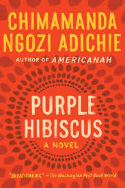
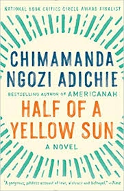
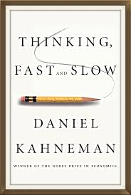
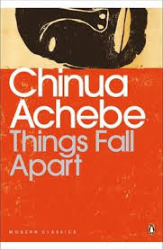

About Me
I am a dedicted, impactful individual whose main goal in life is to add value to the lives of others. For the past five years I have worked as a youth minister at my church focused working with youths to provide a safe enviorment for them to express themselves and learn about how to live impactful lives. When I am not at work, I am creating the next activity/teaching guides that will be helpful for the youths I work with.
I am also an avid reader who enjoys the comfort of relaxing on my porch, reading a book. I have always enjoyed reading and would often stay in my room hours as a kid poring over an interesting book or in the library selecting what my next reading would be. I enjoy both Fictional annd non-fictinal books. For fictional readings, I particularly enjoy reading African literature and Authors. For non-fictional reading, I enjoy reading topics related to the Economy and Organizational Psychology. Some of my favorite titles, both fictional and non-fictional include:
(Click on each of the books to view details about it)
- 
- 
- 
- 
I also creativly express myself using beads and gold/silver wire to create beautiful pieces of jewelry. The part of bead making that I enjoy the most are learning a new beading technique for a new jewelry project.
You can see some of my jewelry creations in the gallery here